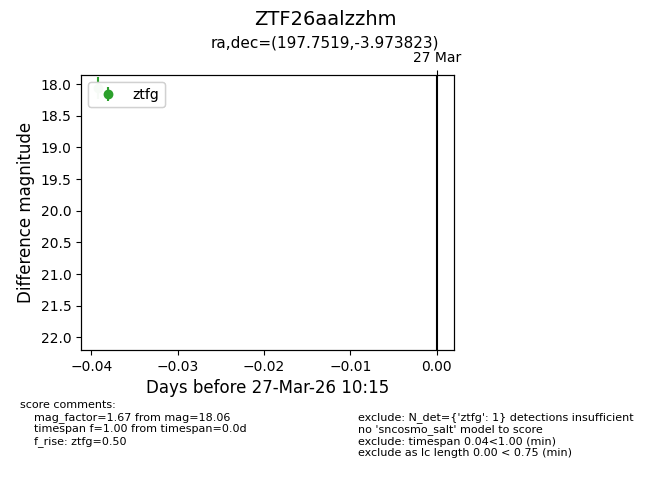
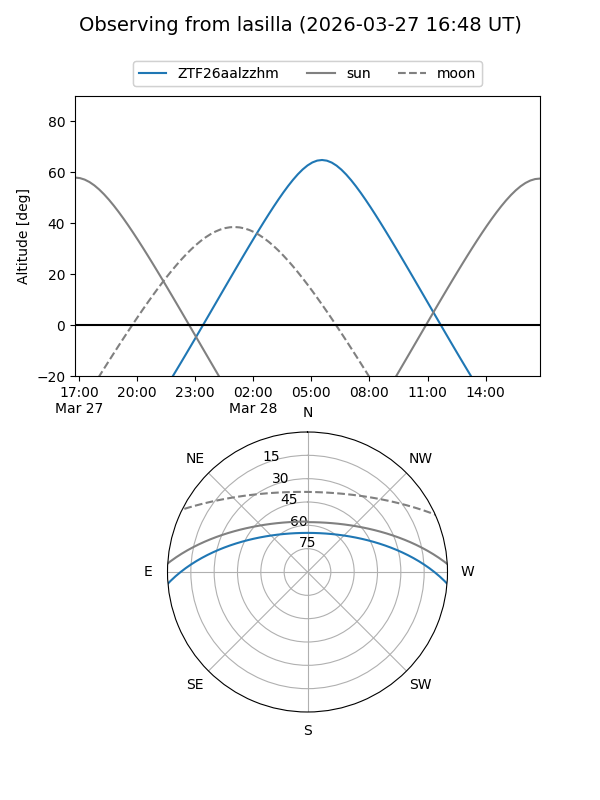
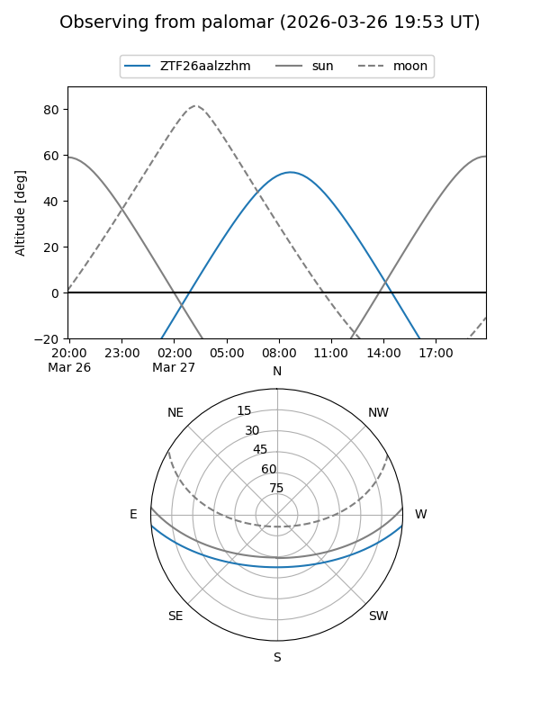

ZTF26aalzzhm
Target ZTF26aalzzhm at 2026-03-27 10:18
Aliases and brokers:
FINK: link
Lasair: link
ALeRCE: link
alt names
ZTF26aalzzhm (ztf,fink_ztf)
Coordinates:
equatorial (ra, dec) = 197.7519,-3.97382
equatorial (HMS+DMS) = 13:11:00.46,-03:58:25.76
galactic (l, b) = (312.3144,+58.54097)
Flags:
Photometry:
last ztfg=18.06
1 ztfg detections
Lightcurve

Visibility


Additional plots